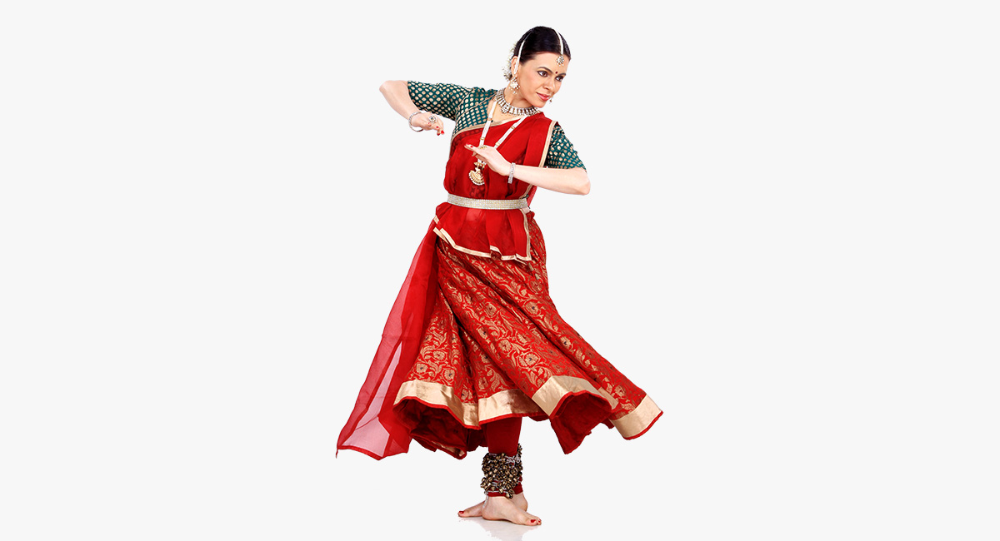
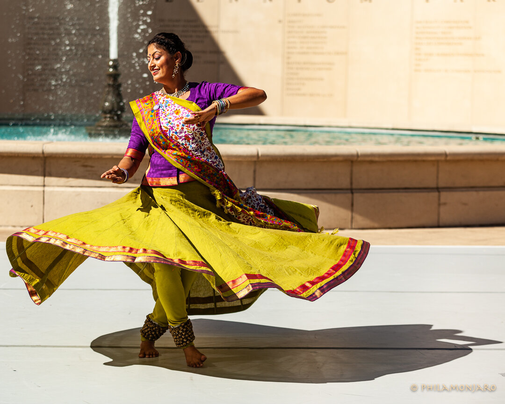
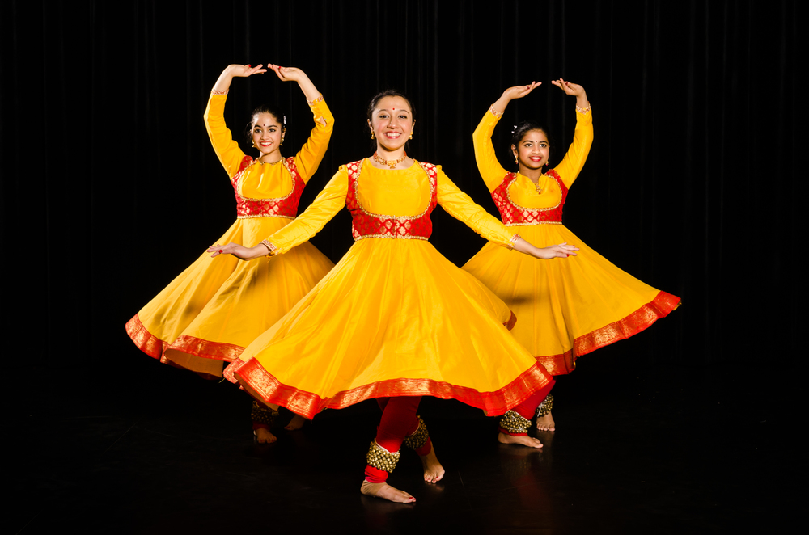

Image Gallery
  Description
Kathak is one of the eight classical dance forms of India, known for its storytelling nature. The word Kathak comes from the Sanskrit word Katha, meaning "story," and dancers use expressive movements, facial expressions (abhinaya), and intricate footwork (tatkar) to narrate mythological tales. This dance form originated in temples, where dancers performed devotional stories from Hindu scriptures like the Ramayana and Mahabharata. During the Mughal era, Kathak transformed into a more refined and courtly dance form, incorporating Persian and Central Asian influences, such as graceful hand movements and rhythmic spins (chakkars). Kathak is characterized by its fast-paced footwork, enhanced by small metallic bells (ghungroos) worn by dancers to create rhythmic patterns in sync with the tabla beats. There are three major styles (gharanas) of Kathak: Lucknow, Jaipur, and Banaras, each with distinct characteristics. Today, Kathak continues to evolve, blending with contemporary and fusion dance styles.